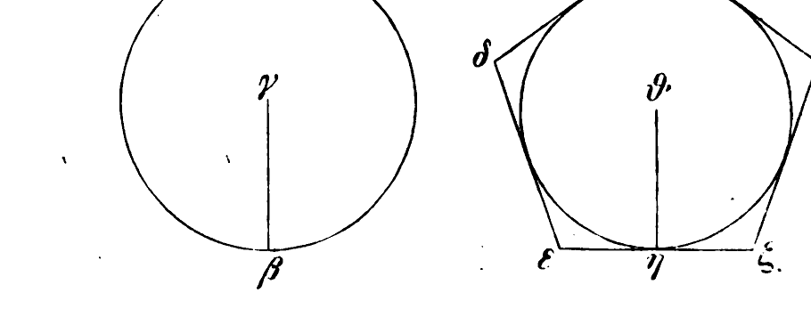

Proposition 2: Circle Exceeds Isoperimetric Regular Polygons¶
Synagoge Book V, Ch. 5 / Prop. 2 (Hultsch I, pp. 310–312) · Original English Translation
5. 2. Again, let \(AB\Gamma\) be an equilateral and equiangular polygon having its perimeter equal to the circumference of circle \(\Delta EZ\); I say that circle \(\Delta EZ\) is greater than polygon \(AB\Gamma\).
f. 0345 · p. 312
step Let \(\Theta\) be taken as the center of circle \(\Delta EZ\), and \(H\) as the center of the circle circumscribed about polygon \(AB\Gamma\), and about the circle let there be circumscribed a polygon \(\Lambda MN\Xi O\) similar to \(AB\Gamma\), let \(\Theta\Delta\) be joined, and from \(H\) let perpendicular \(HK\) be drawn to \(A\Gamma\).
Since, then, the perimeter of polygon \(\Lambda MN\Xi O\) is greater than the circumference of circle \(\Delta EZ\), as is assumed by Archimedes in On the Sphere and Cylinder [because it encloses it], while the circumference of the circle equals the perimeter of polygon \(AB\Gamma\),
the perimeter of polygon \(\Lambda MN\Xi O\) is also greater than the perimeter of polygon \(AB\Gamma\). And the polygons are similar; therefore \(\Lambda\Delta\) is greater than \(AK\). And triangle \(AHK\) is similar to triangle \(\Lambda\Theta\Delta\) (for the whole polygons are similar); therefore \(\Theta\Delta\) is also greater than \(HK\).
[And the circumference of circle \(\Delta EZ\) equals the perimeter of polygon \(AB\Gamma\);] therefore the rectangle contained by \(\Delta\Theta\) and the circumference of circle \(\Delta EZ\) is greater than the rectangle contained by \(HK\) and the perimeter of polygon \(AB\Gamma\).
And the rectangle contained by \(\Delta\Theta\) and the circumference of the circle is double circle \(\Delta EZ\) (for this too was proved by Archimedes in Measurement of a Circle), while the rectangle contained by \(HK\) and the perimeter of polygon \(AB\Gamma\) is double polygon \(AB\Gamma\); taking halves, circle \(\Delta EZ\) is greater than polygon \(AB\Gamma\).

